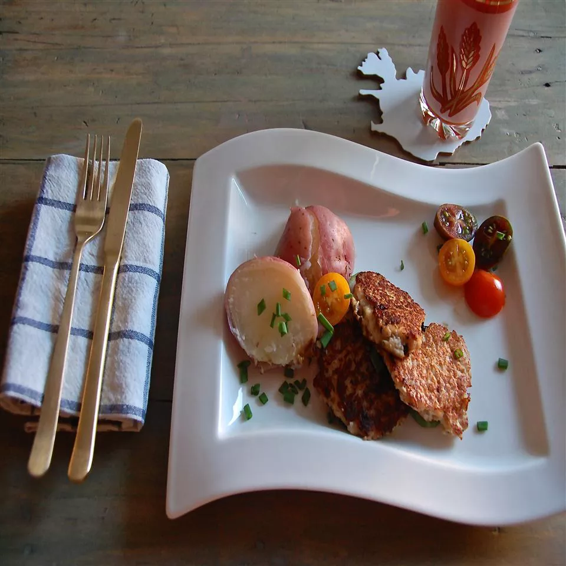

Icelandic Fish Balls

Icelandic Fish Balls is a traditional Icelandic dish.
Here are the ingredients to cook our Icelandic Fish Balls ;
- 2 pounds fresh cod fillets
- 1 cup soy creamer
- 1 medium red onion, chopped
- 2 large eggs
- 3 tablespoons potato starch
- 2 tablespoons Worcestershire sauce
- 1 pinch salt and pepper to taste
- tablespoon vegan butter (such as Earth Balance ®), or more to taste
- 1 cup water, or as needed
- 1 splash dry white wine
Now let's go through our steps to cook Icelandic Fish Balls ;
- Break cod into pieces and place in a food processor with soy creamer, onion, eggs, potato starch, Worcestershire sauce, salt, and pepper; process until evenly blended. Transfer to a bowl, cover, and refrigerate for at least 4 hours.
- Remove from the refrigerator and shape into balls (think crab cake size but thicker.)
- Melt butter in a skillet over medium heat. Add fish balls and saute on all sides until golden brown, 8 to 10 minutes. Add 1/2 inch water to the skillet with wine. Cover, bring to a simmer, and cook until cooked through, about 10 more minutes.
Bon appetite !